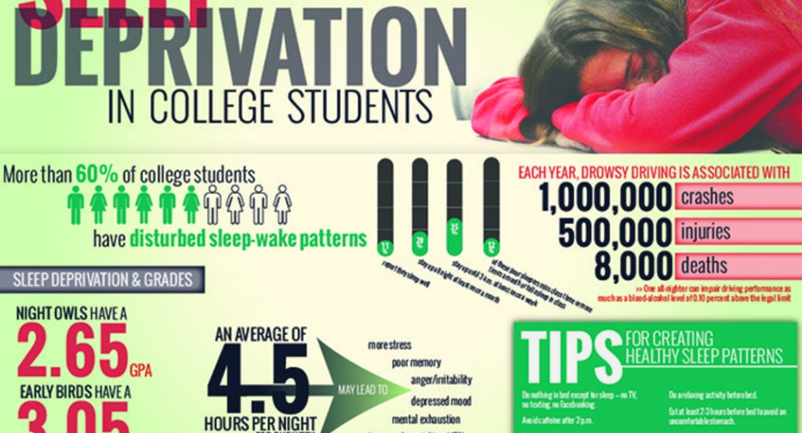

1. Is it important to be involved in student organizations or groups while you are at college? Why or why not? I think it is important to be involved in groups or organization while in college. It's fun and you get more opportunites to meet new people from different backgrounds.
2. As you have been away from home for a few months now, what has been the biggest struggle as you strive for independence? If you are a commuter student, what has been the biggest struggle as you try and exert your independence while still living at home? This one is kind of hard. I guess setting my own time schedule. Times to study, do homework, and Sleep. At home I was made to go to sleep at a good time, now I have to make sure I get enough sleep on my own. Coming here has really made me hone my time management skills.
